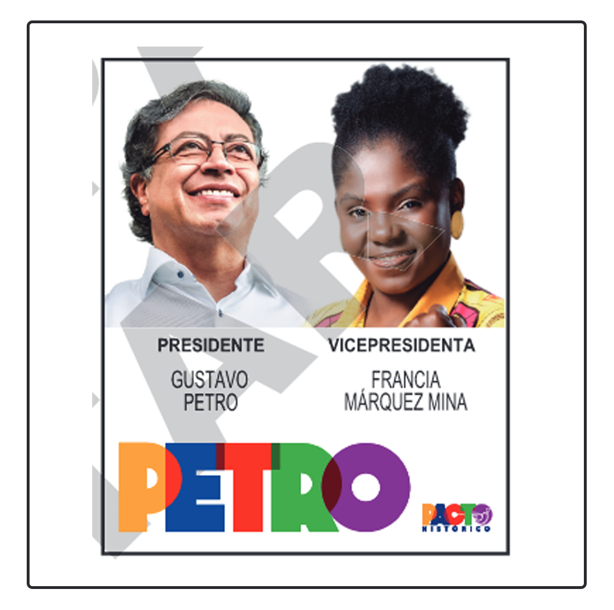
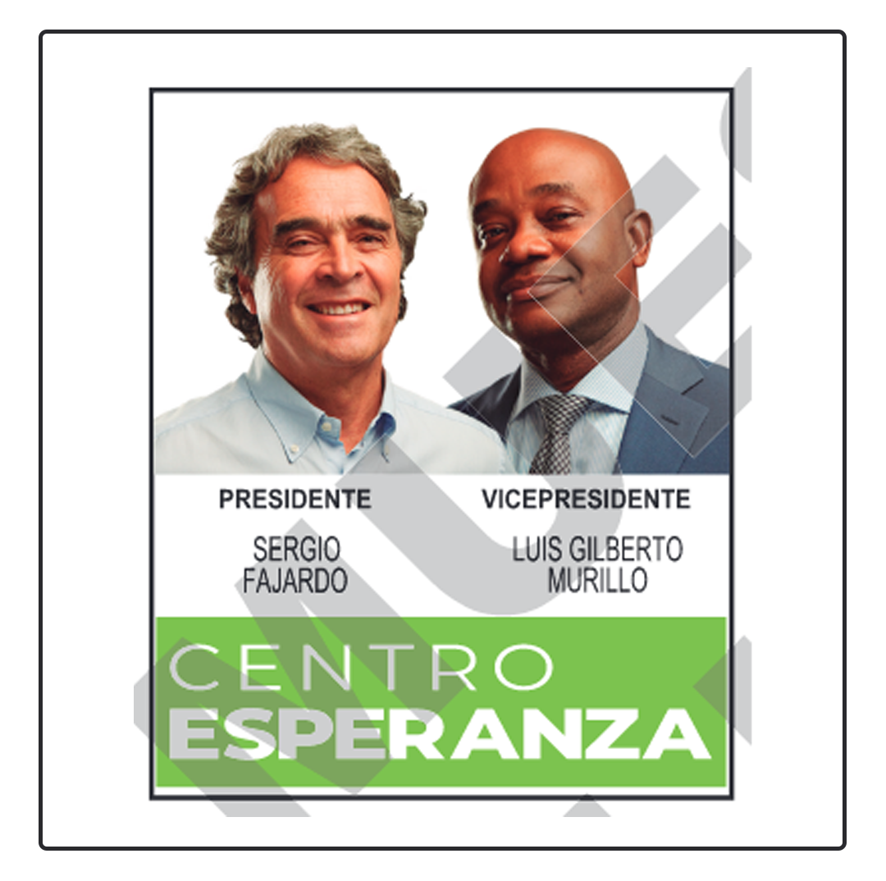
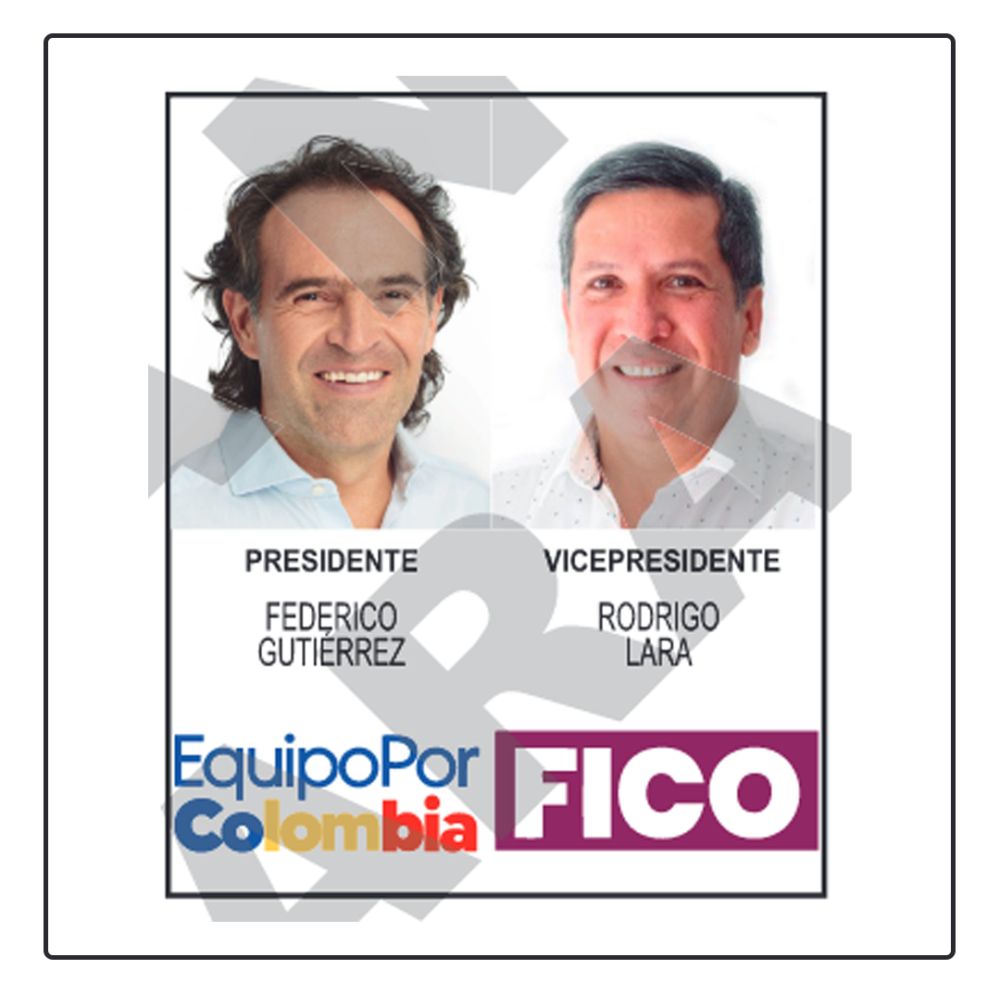

| GUSTAVO PETRO URREGO | RODOLFO HERNÁNDEZ | SERGIO FAJARDO | FEDERICO GUTIÉRREZ |
|---|---|---|---|
|  |  |  | |
|
Economista de la Universidad Externado de Colombia, con estudios de especialización en
Administración Pública de la ESAP, estudios de Master de Economía de la Universidad Javeriana,
Especialización en Medio Ambiente y Desarrollo Poblacional en la Universidad Católica de Lovaina y
Estudios de Doctorado en Nuevas Tendencias en Administración de Empresas en la Universidad de
Salamanca. Fundó junto con los desmovilizados del proceso de paz, el partido político Alianza
Democrática M-19, movimiento que logró un gran respaldo popular y que participó en la redacción de
la Constitución de 1991. Con el apoyo de este movimiento, Petro llegó a la Cámara de Representantes
en 1991 por el departamento de Cundinamarca. Fue elegido Alcalde Mayor de Bogotá de 2012 a 2015. En
2018 candidato Presidencial por el Movimiento Significativo de Ciudadanos – Colombia Humana, con una
votación histórica de más de 8 millones de votos y haciendo uso por primera vez del Estatuto de la
Oposición (Ley 1909 de 2018) al ser la segunda votación en las presidenciales, es ahora Senador de
la República para el periodo de 2018 a 2022.
La fórmula presidencial de Petro es Francia Márquez Mina, abogada de 39 años, y nacida en Suárez,
Cauca. El mundo la conoció por su activismo en contra de la minería ilegal que se presentaba en su
municipio. Fue obligada a irse de su territorio tras recibir múltiples amenazas, y pasó a ser una de
las figuras más representativas de este movimiento. Recientemente en las consultas interpartidistas,
Márquez respaldó su imagen y su campaña con más de 700.000 votos que recibió por hacer parte de la
Coalición Pacto Histórico. Su campaña fue impulsada por sectores afro, mujeres y jóvenes que
retumbaban también la escena de las redes sociales a través de Tik Tok e Instagram, en donde cuenta
con más de 300.000 seguidores. |
Nació en Piedecuesta (Santander), pero desde niño vivió en Bucaramanga. Estudió Ingeniería Civil en
la Universidad Nacional de Colombia. Hernández, de 76 años, es un empresario y político colombiano.
Fue alcalde de Bucaramanga desde 2016 hasta su suspensión y posterior renuncia en 2019. Como alcalde
lideró el movimiento Lógica, Ética y Estética, movimiento que también usa para su actual campaña.
Su compañera de fórmula para ocupar la vicepresidencia es Marelen Castillo Torres, quien se
desempeñaba como vicerrectora académica de la Universidad Minuto de Dios en Bogotá. La fórmula de
Hernández es licenciada en Biología y Química de la Universidad Santiago de Cali, además, es
ingeniera industrial de la Universidad Autónoma de Occidente y tiene maestría en Administración y
Gestión de Empresas. |
Nació en Medellín, Antioquia. Realizó un pregrado de matemáticas en la Universidad de los Andes, una
maestría y un doctorado en Matemáticas en la Universidad de Wisconsin (Estados Unidos). Su carrera
política inició en 1999, aunque antes, como académico e intelectual, apoyó la candidatura
presidencial de Ernesto Samper. En 1998 sonó como director de Colciencias. Durante 1999, Sergio
Fajardo formó el movimiento Compromiso Ciudadano y se lanzó a la Alcaldía de Medellín para las
elecciones del 2000, pero no logró llegar a obtener un alto porcentaje. En 2003 fue electo alcalde
de Medellín y, en el 2010, se convirtió en la fórmula vicepresidencial de Antanas Mockus. En el 2012
fue nombrado gobernador de Antioquia.
El exministro de Ambiente, Luis Gilberto Murillo, es la fórmula presidencial de Fajardo. El líder
político chocoano estaba en la carrera presidencial como candidato independiente por el partido
Colombia Renaciente, luego de abandonar la Coalición Centro Esperanza. Ingeniero de minas, fue
ministro del Medio Ambiente desde 2016 hasta 2018. En marzo de 2022 se unió a la campaña de Sergio
Fajardo para las elecciones presidenciales de 2022 como candidato a la vicepresidencia. Murillo
había recibido el coqueteo de varios sectores políticos como el Pacto Histórico y el Partido Liberal
del expresidente César Gaviria. |
Nació en Medellín en 1974, estudió ingeniería civil en la Universidad de Medellín. Tiene una
especialización en Alta Gerencia de la Universidad de Medellín y otra en Ciencias Políticas de la
Universidad Pontificia Bolivariana. Su carrera política inició desde muy joven, cuando fue elegido
Consejero Municipal de la Juventud y Consejero Municipal de Planeación de Medellín. En 2003, fue
electo concejal por el Nuevo Partido y en 2007 fue reelegido, pero por el Partido de La U. Fue
alcalde de Medellín en 2016.
La fórmula presidencial es Rodrigo Lara Sánchez, hizo parte de la Coordinación Regional en el
Departamento del Huila de la campaña de Antanas Mockus a la Presidencia por el Partido Verde.
Alcalde de Neiva para el periodo 2016 – 2019 con 74.212 votos, una histórica votación en la capital
del Huila. Como mandatario de los neivanos fue el primero en el país en adoptar la plataforma Secop
II para el manejo transparente de la contratación y recursos públicos, lo que le mereció un
reconocimiento y referencia de la Secretaría de Transparencia de Presidencia de la República. En
2018 obtuvo el premio ‘Alcalde más Pilo de Colombia’ por el programa de formación preescolar a niños
y niñas de escasos recursos denominado ‘Transición es una Nota’. |